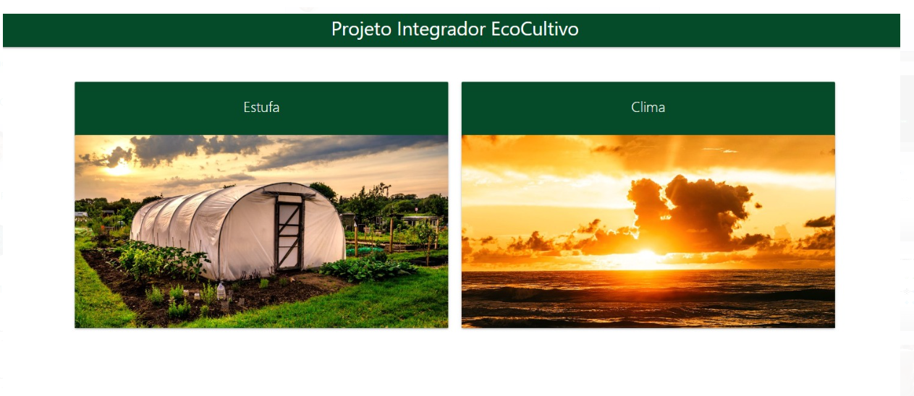
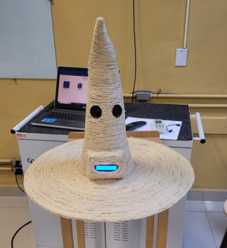

Sou um desenvolvedor apaixonado por tecnologia e por criar soluções inovadoras. Minha jornada começou após uma transição de carreira, quando decidi me aprofundar na área de tecnologia.
Concluí o curso técnico em Análise e Desenvolvimento de Sistemas na ETEC, onde tive a certeza de que o desenvolvimento de software era minha verdadeira paixão.
Atualmente, atuo como desenvolvedor de software e consultor especializado em SAS, buscando sempre aprimorar minhas habilidades e enfrentar novos desafios.
Projeto desenvolvido para monitorar uma estufa, coletando dados em tempo real e integrando-os com informações meteorológicas. Os resultados são exibidos de forma dinâmica em uma interface frontend construída com React, proporcionando uma visualização intuitiva e atualizada das condições da estufa.
Projeto utilizando o ESP8266, módulo MP3, alto-falantes e sensor de distância. Ao detectar que o aluno colocou o chapéu, um áudio é reproduzido automaticamente, indicando de forma aleatória a "escola" à qual o aluno pertence. 
Adoraria conversar! Me encontre nas redes sociais: